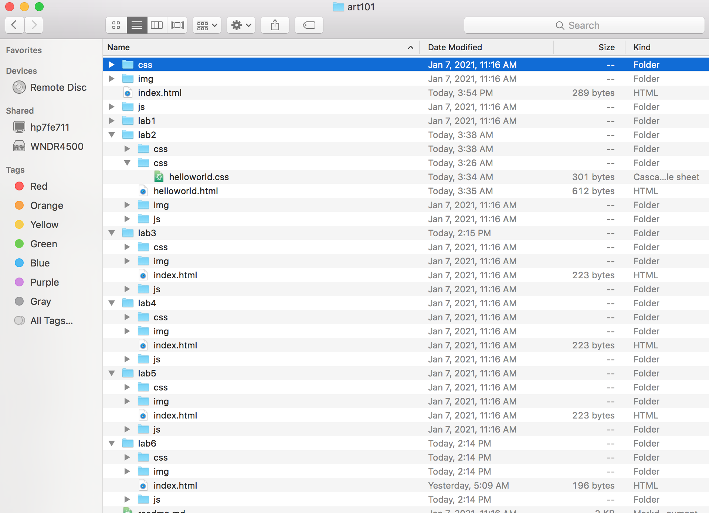

The subject of this lab was to further expand our file structure of the art101 repository, along with using what we have learned from class and applying it to new web pages.
I did not have too much trouble with creating the file structure, it was quite simple to do. The only part that really troubled me was implementing my selfie onto the webpage. I eventually realized what I was doing wrong, and was able to get it to work (I did not name the selfie as selfie.jpg).
This is the index.html file I created for Lab 3, and below is the file structure. 